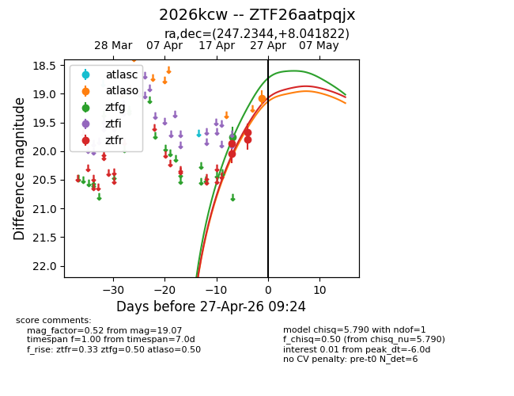
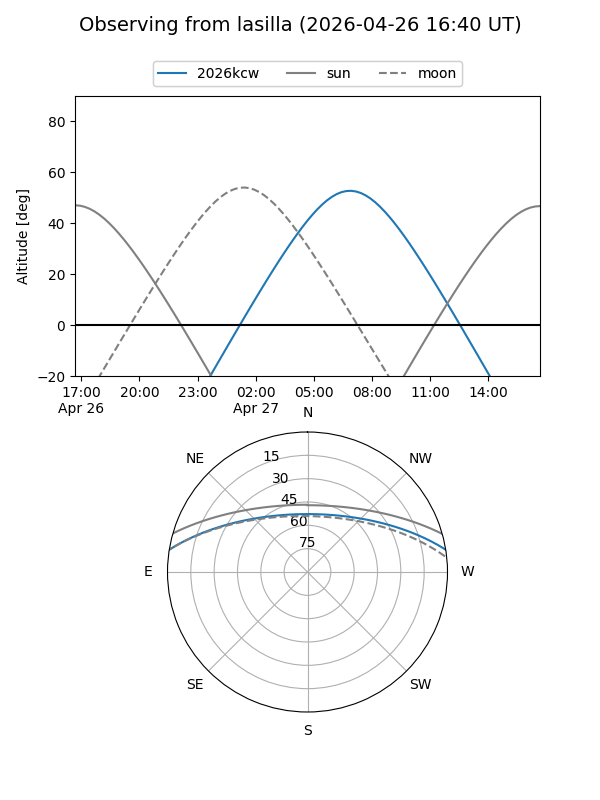
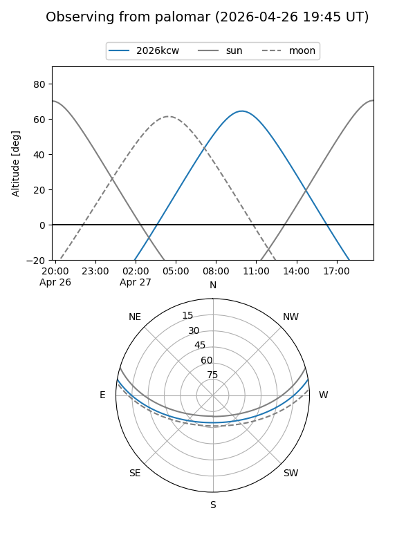
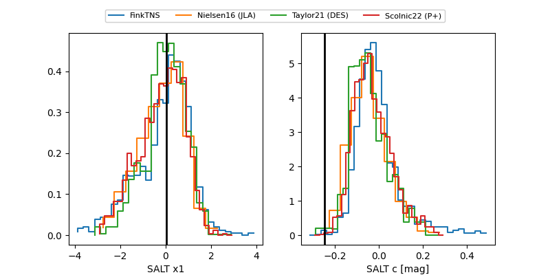

2026kcw
Target 2026kcw at 2026-04-27 09:26
Aliases and brokers:
FINK: link
Lasair: link
ALeRCE: link
TNS: link
YSE: link
alt names
ZTF26aatpqjx (ztf,fink_ztf)
2026kcw (tns,yse)
Coordinates:
equatorial (ra, dec) = 247.2344,+8.04182
equatorial (HMS+DMS) = 16:28:56.26,+08:02:30.56
galactic (l, b) = (23.1692,+35.24624)
Flags:
Photometry:
last atlaso=19.07, ztfg=19.76, ztfr=19.79
1 atlaso, 1 ztfg, 4 ztfr detections
Lightcurve

Visibility


Additional plots
